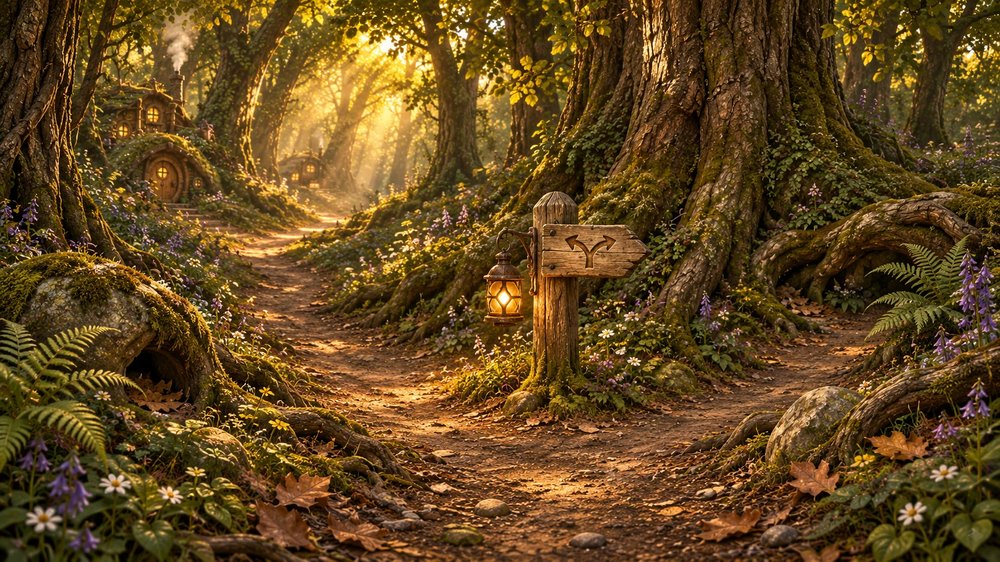
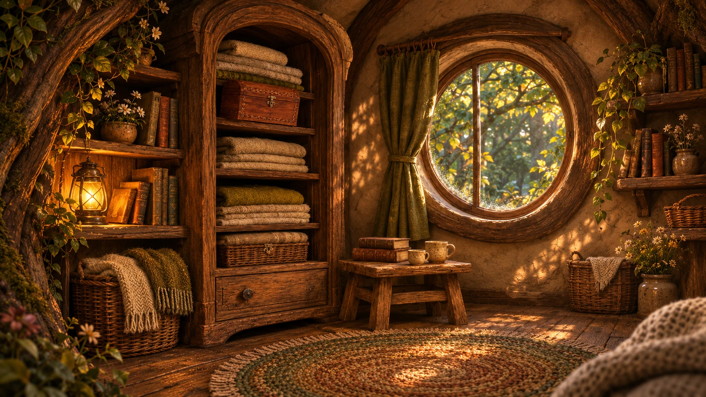
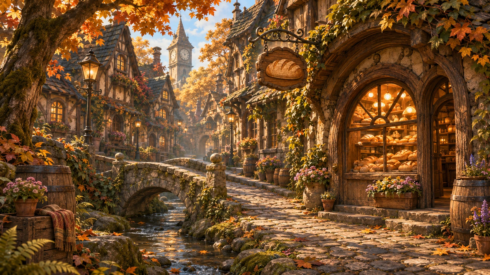
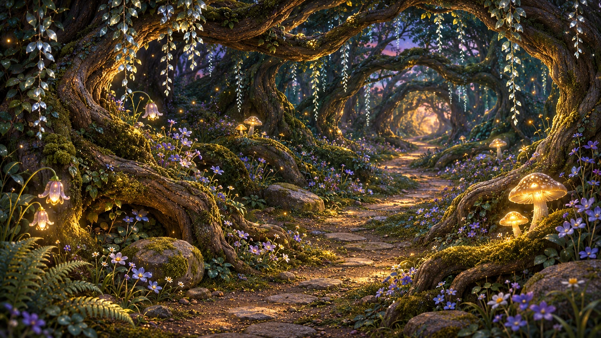

A JackLight Tales adventure
Woodland
Search
A little wonder is hiding everywhere.
Explore ten cosy places with Barnaby and his friends. In each picture, find a friend, a glowing Heart Seed and a little treasure.
No timer. No rush. Just a little exploring.
With Luna’s voice to guide you
On every woodland path
Three little discoveries.
- 01 · LOOK CLOSELY
Find a friend
Tap or click the friend hiding in the picture.
- 02 · FIND THE GLOW
Collect a Heart Seed
Tap the little green and golden glow.
- 03 · ONE MORE SURPRISE
Uncover a secret
Find the treasure to complete the picture.
Need a little help? Tap A little hint whenever you’re ready.
Where will we wander?
From cosy corners to firefly glades.
Every journey visits all ten places, with a different order to explore.

Barnaby’s Cosy Burrow

The Bakery Bridge

Twinkle’s Firefly Glade
Discover all ten woodland places
- Barnaby’s Cosy Burrow
- The Woodland Garden
- The Bakery Bridge
- The Village Green
- Lantern Lane
- Clock Tower Square
- The Woodland Pond
- The Apple Orchard
- The Winding Woodland Path
- Twinkle’s Firefly Glade
Path 1 of 10 · Barnaby’s Cosy Burrow
Find Barnaby
Barnaby is hiding among the books and cosy corners.
Look carefully among the books and cosy corners.
Wonderful spotting!
You found Barnaby!
The path is glowing a little brighter now.
Another woodland place is waiting.